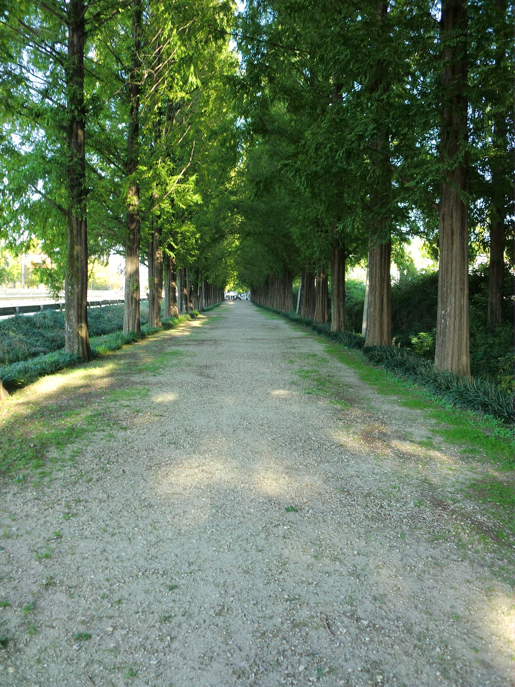

담양 죽림마을 주민들, 협동조합 세워 1MW 햇빛소득마을 준비…예상 매출 2억4,000여만 원, 계통 막혀 4개 마을 묶는 ESS 검토

대출 상환·유지비 빼고 남는 돈은 조합원 배당·마을기금·경로당 복지에…ESS 예상 설치비 한 곳당 약 80억 원, 군 관계자 설명 분담은 정부 40%·민간 30%·지방비 30%로 아직 확정 아냐
지난 27일 대통령실과 관계기관이 현장간담회를 위해 찾은 전남광주 담양군 금성면 죽림마을은 올해 2월 주민들이 세운 '담양봉황햇빛협동조합'을 중심으로 1MW 규모의 햇빛소득마을 발전사업을 준비하고 있다. 담양군 투자유치과는 이 마을의 예상 매출을 2억4,000여만 원으로 보고 있으며, 여기서 대출금 상환액과 시설 유지비, 장기 보수 충당금을 뺀 나머지를 조합원 배당과 마을공동기금, 경로당 복지 등에 쓸 계획이라고 설명했다. 수익을 어디에 얼마씩 나눌지는 협동조합이 주민 합의로 정하고 군은 신청과 추진을 돕는 구조이며, 사업에 참여하려면 주민 70% 이상이 동의해야 한다. 담양에서는 7월 30일 1차 공모에서 창평면 부동마을이, 10월 7일 발표된 2차 공모에서 죽림마을과 고서면 성산마을, 용면 두장마을, 대덕면 대소산마을 등 4곳이 뽑혔지만, 2차 선정 마을들에는 전력계통 연계와 조합원 출자 비율 보완, 국유지 사용 협의 같은 조건이 붙었고 죽림마을의 발전 개시와 배당 시점도 아직 정해지지 않았다. 군은 일부 지역을 빼면 전력망 연결에 제약이 있다며 인근 햇빛소득마을 약 4곳을 묶는 에너지저장장치(ESS)를 검토하고 있는데, 군 관계자는 한 곳당 예상 설치비를 약 80억 원, 분담을 정부 40%·민간업체 30%·지방비 30%(지방비 가운데 군 70%)로 설명했으나 아직 마을을 묶어 추진하는 단계는 아니고 실제 설치 여부와 비용은 바뀔 수 있다. 담양군은 27일 간담회에서 ESS 구축 지원과 지방비 부담 완화를 요청하고 후속 논의를 기다리고 있으며, 군 관계자는 "가장 중요한 것은 마을에서 자체적으로 한다는 점"이라고 말했다.
시민에너지 관점
1MW 마을 하나의 예상 매출이 2억4,000여만 원인데 계통에 붙이려면 네 마을을 묶은 저장장치 하나에 약 80억 원이 든다는 것은, 햇빛소득마을의 성패가 마을의 의지보다 전력망 비용을 누가 지느냐에 달려 있다는 뜻이다. 독일 브란덴부르크의 작은 마을 펠트하임은 주민과 지역 개발사가 함께 마을 자체 배전망과 대형 배터리를 갖춰, 망과 저장장치까지 지역이 쥐는 길을 보여 줬다. 공공 돈을 저장장치에 넣는 것이 특혜라는 시각도 있겠지만, 전력망 제약은 마을이 만든 문제가 아니고, 오히려 민간업체 몫 30%가 저장장치의 소유와 수익을 바깥으로 가져가면 출자 비율까지 보완하며 버텨 온 주민이 주인 자리를 잃을 수 있다. 정부는 담양의 건의에 답하면서 조건부 마을의 ESS 비용 기준과 함께, 묶음 저장장치의 지분과 수익이 주민 협동조합에 먼저 돌아가는 소유 구조를 내놓아야 한다.
출처: 천지일보 2026-10-28 이미애 원문 보기
潭陽・竹林村の住民が協同組合を設立し1MWの日差し所得村を準備…予想売上2億4,000万ウォン余り、系統制約で4村をまとめるESSを検討
融資返済・維持費を除いた残りは組合員配当・村の基金・敬老堂の福祉に…ESSの予想設置費は1カ所当たり約80億ウォン、郡関係者の説明による分担は政府40%・民間30%・地方費30%で、まだ確定していない
27日に大統領室と関係機関が現場懇談会のため訪れた全南光州・潭陽郡金城面の竹林村では、今年2月に住民が設立した「潭陽鳳凰日差し協同組合」を中心に、1MW規模の日差し所得村発電事業の準備が進んでいる。潭陽郡投資誘致課はこの村の予想売上を2億4,000万ウォン余りとみており、そこから融資の返済額、施設の維持費、長期補修のための積立金を差し引いた残りを、組合員への配当や村の共同基金、敬老堂の福祉などに充てる計画だと説明した。収益をどこにどれだけ配分するかは協同組合が住民の合意で決め、郡は申請と推進を支援する仕組みで、事業への参加には住民の70%以上の同意が必要となる。潭陽では7月30日の第1次公募で昌平面の釜洞村が、10月7日に発表された第2次公募で竹林村と古西面の城山村、龍面の斗長村、大徳面の大小山村の4カ所が選ばれたが、第2次の選定村には電力系統への連系、組合員の出資比率の補完、国有地使用の協議といった条件が付き、竹林村の発電開始と配当の時期もまだ決まっていない。郡は一部の地域を除いて電力網への接続に制約があるとして、近隣の日差し所得村約4カ所をまとめるエネルギー貯蔵装置（ESS）を検討しており、郡関係者は1カ所当たりの予想設置費を約80億ウォン、分担を政府40%・民間事業者30%・地方費30%（地方費のうち郡が70%）と説明したが、まだ村をまとめて推進する段階ではなく、実際の設置の可否や費用は変わり得る。潭陽郡は27日の懇談会でESS構築への支援と地方費負担の軽減を求め、後続の協議を待っており、郡関係者は「最も重要なのは村が自ら取り組むという点だ」と話した。
市民エネルギーの視点
1MWの村ひとつの予想売上が2億4,000万ウォン余りなのに、系統につなぐには4村をまとめた貯蔵装置ひとつに約80億ウォンかかるということは、日差し所得村の成否が村の意志よりも、電力網の費用を誰が負担するかにかかっていることを意味する。ドイツ・ブランデンブルク州の小さな村フェルトハイムは、住民と地域の開発事業者が共に村独自の配電網と大型蓄電池を整え、送配電網や貯蔵装置まで地域が握る道を示した。公的資金を貯蔵装置に投じるのは特恵だという見方もあろうが、電力網の制約は村がつくった問題ではなく、むしろ民間事業者の取り分30%が貯蔵装置の所有と収益を外に持ち出せば、出資比率まで補いながら踏ん張ってきた住民が主人の座を失いかねない。政府は潭陽の建議に答えるにあたり、条件付き選定村のESS費用の基準とともに、まとめて設置する貯蔵装置の持ち分と収益がまず住民協同組合に戻る所有構造を示すべきだ。
出典: 天地日報 2026-10-28 イ・ミエ 原文を読む
潭阳竹林村村民成立合作社筹备1MW阳光收入村…预计销售额2.4亿多韩元，因电网受限考虑建设串联4个村的储能设施
扣除贷款偿还和维护费后的余额用于社员分红、村公共基金和敬老堂福利…储能设施预计每处安装费约80亿韩元，据郡方相关人士介绍分摊比例为政府40%、民间30%、地方财政30%，尚未确定
27日总统室和相关机构为召开现场座谈会而走访的全南光州潭阳郡金城面竹林村，正以村民今年2月成立的"潭阳凤凰阳光合作社"为中心，筹备规模1MW的阳光收入村发电项目。潭阳郡投资招商科预计该村的销售额为2.4亿多韩元，并介绍称，计划从中扣除贷款偿还额、设施维护费和长期维修准备金后，将余额用于社员分红、村公共基金和敬老堂福利等。收益用在哪里、各分多少，由合作社经村民协商决定，郡里负责协助申请和推进；参与项目须获得70%以上村民同意。潭阳在7月30日的第1次公募中有昌平面釜洞村入选，在10月7日公布的第2次公募中，竹林村以及古西面城山村、龙面斗长村、大德面大小山村等4个村入选，但第2次入选的村子被附加了电网并网、补足社员出资比例、协商国有土地使用等条件，竹林村的发电启动和分红时间也尚未确定。郡方表示，除部分地区外接入电网受限，正在考虑建设串联附近约4个阳光收入村的储能设施（ESS）；郡方相关人士介绍每处预计安装费约80亿韩元，分摊比例为政府40%、民间企业30%、地方财政30%（地方财政中郡承担70%），但目前尚未进入串联各村推进的阶段，实际是否安装以及费用都可能变化。潭阳郡在27日的座谈会上请求支持建设储能设施并减轻地方财政负担，目前正等待后续讨论；郡方相关人士表示："最重要的是由村子自己来做。"
市民能源视角
一个1MW村子的预计销售额为2.4亿多韩元，而要接入电网，串联4个村的一套储能设施就需约80亿韩元，这意味着阳光收入村的成败与其说取决于村子的意愿，不如说取决于由谁承担电网成本。德国勃兰登堡州的小村费尔德海姆由村民和当地开发商共同建起村里自己的配电网和大型电池，展示了让地方连电网和储能都掌握在手中的道路。或许有人认为把公共资金投入储能设施是特惠，但电网受限并不是村子造成的问题；反倒是如果民间企业30%的份额把储能设施的所有权和收益带到外面，连出资比例都在努力补足的村民就可能失去主人的位置。政府在回应潭阳的建议时，应在提出附条件入选村的储能费用标准的同时，拿出让串联储能设施的股份和收益优先回到村民合作社的所有权结构。
来源: 天地日报 2026-10-28 Lee Mi-ae 查看原文
Residents of Jungnim village in Damyang form a cooperative to prepare a 1MW sunlight income village; expected sales of over 240 million won, and grid limits push the county to consider an ESS shared by four villages
What remains after loan repayments and upkeep will go to member dividends, a village fund and senior-centre welfare; the ESS is expected to cost about 8 billion won per site, with a 40% government, 30% private and 30% local split described by a county official but not yet settled
Jungnim village in Geumseong-myeon, Damyang County, South Jeolla-Gwangju, which officials from the presidential office and related agencies visited for an on-site meeting on the 27th, is preparing a 1MW sunlight income village power project centred on the Damyang Bonghwang Sunlight Cooperative that residents set up in February this year. The county's investment promotion division puts the village's expected sales at a little over 240 million won and said that, after loan repayments, facility upkeep and a reserve for long-term repairs are deducted, the remainder is to go to member dividends, a common village fund and welfare at the senior centre, among other uses. The cooperative decides by resident agreement where the income goes and in what shares, while the county supports the application and implementation, and joining the project requires the consent of at least 70% of residents. In Damyang, Budong village in Changpyeong-myeon was chosen in the first round on July 30, and four villages, Jungnim, Seongsan in Goseo-myeon, Dujang in Yong-myeon and Daesosan in Daedeok-myeon, were selected in the second round announced on October 7, but the second-round villages carry conditions such as grid connection, topping up members' equity shares and negotiating the use of state land, and no date has been set for Jungnim to start generating or paying dividends. Saying that grid connection is constrained in all but parts of the county, Damyang is considering an energy storage system (ESS) that would group about four nearby sunlight income villages; a county official put the expected installation cost at about 8 billion won per site, shared 40% by the government, 30% by a private company and 30% from local budgets (with the county paying 70% of the local share), but the villages have not yet been grouped to pursue it and whether it is built, and at what cost, may change. At the meeting on the 27th the county asked for support to build the ESS and for a lighter local-budget burden, and it is waiting for follow-up talks; a county official said "the most important thing is that the village does it itself."
Citizen Energy View
When a single 1MW village expects sales of a little over 240 million won but connecting to the grid takes one storage system costing about 8 billion won for four villages combined, the fate of sunlight income villages depends less on the villages' will than on who pays for the grid. Feldheim, a small village in Brandenburg, Germany, showed another way when residents and a local developer together built the village's own distribution network and a large battery, keeping even the wires and storage in local hands. Some may call public money for storage a special favour, but grid constraints are not a problem the villages created, and if the private company's 30% share carries the ownership and income of the storage system elsewhere, residents who have been struggling even to top up their equity could lose their place as owners. In answering Damyang's request, the government should set out cost standards for ESS in conditionally selected villages along with an ownership structure in which the shares and income of a pooled storage system go first to the residents' cooperatives.
Source: Cheonji Ilbo (Newscj) 2026-10-28 Lee Mi-ae Read the original